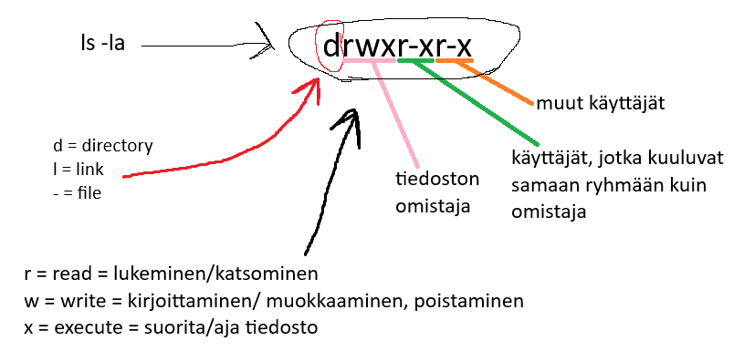
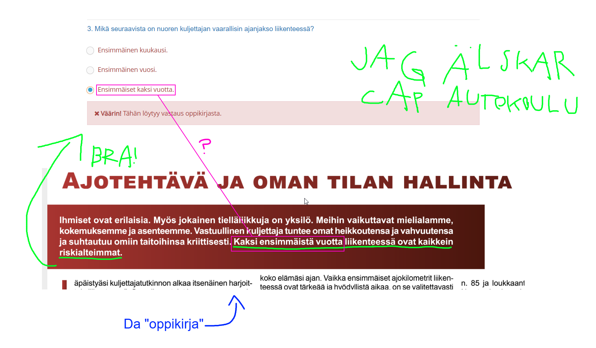
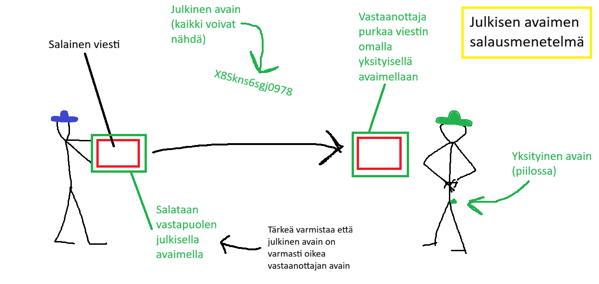

Tämä on tämmöinen nettisivu


Everyone has 24 hours in their day. But what if I had 25 hours in my day. What would I do and what would my life look like?
I would probably use my extra time for going to the gym. Now I can’t really go to the gym because schooldays are long, and I don’t live really close to the school so going to the school and home from there takes time. One hour isn’t very long time for going to the gym but that everyday is still pretty much. But maybe I don’t even need to the gym. I have Judo training and I go jogging about three times a week, so I do pretty much sports already.
Maybe I would then just do schoolwork for the extra hour. In high school there is very much homework that I need to do. Now the time I have is just enough for me to do my homework. But extra time would always be nice.
Or maybe I would just sleep more. Nowadays I sleep about seven or eight hours a night and that is pretty good for me, but I sometimes still feel tired. It would really be good if I could sleep even one hour more than now. But I don’t know if I would really sleep or would the time go for something else like TikTok or YouTube shorts. But I probably wouldn’t use the time for those short videos because they are not good for my brains, and they shorten attention time.
So I would probably use the extra time for going to the gym, schoolwork or sleeping, and my life would probably look a little bit different but it still would really help my life if I had even one hour more in a day.
MunGradia: Kaikki opintoihin liittyvät asiat, lukion opinto-opas (esimerkiksi uusinta- ja rästikokeet)
Muista Wilman tiedotteet
OPINTOPOLKU.FI - Kaikki Suomessa järjestettävä koulutus
Oma opintopolku: kaikki omat koulutiedot
Korkeakoulujen omat sivut
Terveellinen ruoka on tärkeää ihmisen terveydelle. Epäterveelliset ruokailutottumukset voivat vaikuttaa terveyteen negatiivisesti. Terveellisen ruokailun ei tarvitse olla hankalaa, ja siihen tarvittavia taitoja on mahdollista harjoitella.
Syömistottumukset vaikuttavat paljon siihen tuleeko terveellistä ruokaa syötyä. Jos esimerkiksi on tottunut syömään joka ruoka salaattia, niin sitä tulee varmastikin syötyä jatkossakin. Myös jos on esimerkiksi tottunut käymään usein pikaruokaravintoloissa, niin niissä saattaa käydä tulevaisuudessakin. Tapoja voi toki muuttaa ja aina voi alkaa syömään terveellisimmin.
Syömisessä tavoite on saada energiaa ja muita tärkeitä ravintoaineita, jos ruokailutottumukset ovat huonot on, mahdollista että ravintoaineet jäävät saamatta. Tasapainoinen ruokavalio tekee ruokailemisen tavoitteen saavuttamisen helpommaksi. Ruuan laadulla on myös väliä. Roskaruuan syöminen usein tekee tasapainoisesta ruokailusta hankalampaa.
Myös jos on selkeät ruokailuajat, se auttaa syömään terveellistä ruokaa, kun ei tule naposteltua päivän mittaan jotain. Jos syö selkeän aamuruoan, ei jää nälkä eikä tule naposteluta vain ruoan sijaan.
Terveelliseen ruokailuun liittyy siis monia asioita kuten syömistottumukset, selkeät ruokailuajat ja riittävät ravintoarvot. Terveellisesti syöminen on tärkeää kunnossa pysymisen ja terveellisen elämän kannalta.
Rapukeitto

10e
Minionit

2e each
Lippu Marsiin

0,13e



